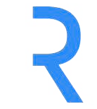

The Rhapsody wordmark is the core of the identity. Lead with the primary version wherever possible; the alternates exist for dark backgrounds, one-color use, and tight spaces.
Primary logo. Black and blue on light backgrounds.
Variations
White and blue, for dark backgrounds.
One-color black, for light or limited-color use.
One-color white, for dark or limited-color use.
Monogram

The R monogram, for tight spaces only, social avatars, favicons, merch. Light version on light backgrounds; the inverse (white bar, blue R) for dark mode. Never in place of the full logo in formal communications.
Logo rules
Clear spaceAlways keep clear space around the logo to protect its clarity. Use the height of the mark as the minimum clearance on all sides.
Minimum size, printNever smaller than 1.5 in / 38.1 mm wide.
Minimum size, web and videoNever smaller than 108 pixels wide.
In short
Black and blue on light; white and blue on dark.
One-color black or white for limited-color contexts.
Always all capital letters. Maintain clear space. Use official logo files only.
Product logo
Product logos pair the Rhapsody wordmark with a product name in a fixed lockup, horizontal or vertical. Use only approved lockups, never create product-only wordmarks or alter the mark.
Axon
Horizontal lockup.
Axon
Vertical lockup.
Illustrative lockups. Always use the approved, locked artwork files, never rebuild the spacing by hand.
Co-branding lockup
When Rhapsody appears alongside a partner or customer logo, use a horizontal lockup: the Rhapsody wordmark, a thin teal divider, then the partner mark. The divider does the separating, so neither logo needs a box.
PARTNER
On light backgrounds.
PARTNER
On navy or dark backgrounds.
One thin teal divider, roughly the cap height of the wordmark. Never a box or rule around either logo.
Equal clear space on both sides; balance the two marks by eye, not pixel-for-pixel.
Two logos maximum. For three or more partners, use the bracket treatment (see Partner logos).
Logo restrictions
Never do this to the logo
Don’t recolor the wordmark or apply gradients, shadows, or outlines.
Don’t stretch, squash, rotate, or otherwise distort the proportions.
Don’t place the logo on a busy background or one with too little contrast.
Don’t rebuild, retype, or rearrange the wordmark, or box it in.
Don’t crowd it: always keep the minimum clear space.